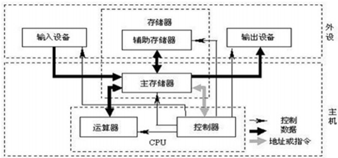

python 系统编程
- TAGS: Python
Python 异常处理与异常机制
主要内容：
- 导演的工作机制
- 异常的语法
- Python异常类结构
- 捕获异常
- 抛出与转移异常
- Try/except/else 理解与使用
- Try/finally 理解与使用
- With 语句及其异常域内存管理机制
序列化和反序列化
主要内容：
- 序列化、反序列化重要性
- Python 序列化库 Pickle
- 文本序列化方案 Json
- 高效二进制序列化库 Msgpack
- 常用序列化方案比较和适用场景
Python 文件系统操作编程
主要内容：
- 文件打开与文件描述符
- 文件的编码与UNICODE
- 二进制文件与文本
- 文本文件的读写
- 二进制文件的读写
- 文件的迭代器读写方式
- 文件读写的异常与 With 语句
- 目录与文件遍历
- 目录创建与删除
- 目录与文件存在判定
- 目录与文件属性查看
- StringIO 和 ByteIO 使用
- 高级文件操作模块 Shutil 使用
- CSV 文件读写与解析
- ini 配置文件的读写与解析
文件操作
冯诺依曼体系架构

CPU由运算器和控制器组成：
- 运算器，完成各种算数运算、逻辑运算、数据传输等数据加工处理
- 控制器，控制计算机各部件协调运行
- 存储器，用于记忆程序和数据，例如内存
- 输入设备，将数据或程序输入到计算机中，例如键盘、鼠标
- 输出设备，将数据或程序的处理结果展示给用户，例如显示器、打印机等
一般说IO操作，指的是文件IO，如果指的是网络IO，都会直接说网络IO
磁盘目前依然是文件持久化最重要设备。、
1956年，IBM发明可以存储5MB的磁盘驱动器。磁盘使用磁性材料记录数据，使用NS极表示0或1。
现代磁盘使用温彻斯特磁盘驱动器，如下
温彻斯特磁盘拥有多个同轴金属盘片，盘片上涂上磁性材料，一组可移动磁头。运行时，磁头摆动从飞速旋转的盘片读取或写入数据。一般常见盘片 转速 为5400转/分钟、7200转/分钟等。磁头摆动定位数据过程称为 寻道 。转速、寻道都影响磁盘读写性能。
磁头不和盘片接触，磁盘内部也不是真空，磁头悬浮在磁盘上方。一组磁头从0编号。
盘片Platter： 涂满磁性材料的盘片，早期是金属的，现在多为玻璃。
磁道Track：盘片划分同心圆，同心圆间距越小，一般来说存储容量越大。磁道编号由外向内从0开始。
扇区Sector：一个磁道上能够存储的0或1信号太多了，所以需要进一步划分成若干弧段，每一个弧段就是一个扇区。通常一个扇区为512字节。每个扇区都有自己的编号。
柱面Cylinder：从垂直方向看，磁道的同心圆就构成了圆柱。编号由外向内从0开始。
注意：盘片内圈扇区面积小，外圈面积大。但扇区都是512字节。外圈磁密度低，内圈磁密度高。
如今磁盘，可以做到磁密度一致，所以磁盘划分，外圈可以划分更多扇区，这样可以存储更多数据。这种分区弧长一致的分配扇区方法称为ZBR(Zoned-bit recording)，按照半径分成不同的磁道组称为Zone。这样，转动同样的角度，外圈读取数据更多。
簇Cluster：操作系统为了优化IO，使用磁盘空间时最小占用的多个扇区。一般簇大小为4-64个扇区(2KB-32KB)。所以，一个文件就有了物理占用空间大小即实际分得的磁盘空间，和逻辑占用大小即文件本身的实际字节数。往往实际占用空间都比文件本身大。越是小文件，越浪费空间。
文件IO常用操作
- open 打开
- read 读取
- write 写稿
- close 关闭
- readline 行读取
- readlines 多行读取
- seek 文件指针操作
- tell 指针位置
打开操作
open 方法
open(
file, #文件对象，路径
mode='r', #模式
buffering=-1, #缓冲区
encoding=None, #编码
errors=None, #出错怎么办
newline=None, #遇到换行符怎么办
closefd=True, #是否关闭文件描述符
opener=None, #打开的是谁
)
打开一个文件，返回一个文件对象（流对象）和文件描述符。打开文件失败，则返回异常
基本使用：
创建一个文件test，然后打开它，用完 关闭
# coding: utf-8 #open('test') #报错，当前路径不存在，FileNotFoundError: [Errno 2] No such file or directory: 'test' f = open('test') # open成功后，一定可以拿到一个文件对象，就可以对它进行增删改查， 文件操作，读写 #文件对象，默认是文件打开方式 #encoding='cp936' #windows默认GBK，codepage代码页 936 等价认为是GBK #encoding='UTF-8' #linux系统默认都是用utf-8 中文大多数3字节 f.close #使用完后关闭
文件操作中，最常用的操作就是读和写。
文件访问的模式有两种：文本模式和二进制模式。不同模式下，操作函数不尽相同，表现结果也不一样。
注：windows中使用codepage代码页，可以认为每一个代码页就是一张编码表。cp936等同于GBK。
open的参数
file
打开或要创建的文件。如果不指定路径，默认是当前路径。
mode模式
模式描述字符意义：
- r 缺省模式，只读打开。文件不存在，立即报错。文件存在，从头开始读，文件指针初始在开头即索引0的位置。
- w 只写打开，不支持读取。文件存在，文件内容将被清空，从头写；文件不存在，文件被创建，从头写。白纸一张，从头写，初始位置在0
- x 创建并写入一个新文件，不支持读取。文件存在，抛异常；文件不存在不报错，新文件被创建
- a 只写打开，追加内容，不支持读取。文件存在，追加写入，文件不存在，创建文件，从头写
- b 二进制模式。字节流，将文本按照字节理解，与字符编码无关。二进制模式操作时，字节操作使用bytes类型。不能单独使用，必须和rwax四种之一配合使用，不影响主模式。
- t 缺省模式，文本模式。text，默认可以不写。不能单独使用，必须和wrax配合使用，不影响主模式
- + 读或写打开后，使用+来增加缺失的写或读的能力。必须和主模式(rwax)配合使用，不影响主模式。
- r+ => rt+ 只读文本模式打开，补充写能力。文件指针在开头。
- w+ => wt+ 只写文本模式打开，补充读能力。w能力不变，会清空所有内容
在上面的例子中，可以看到默认是文本打开模式，且是只读的。
# coding: utf-8 #mode rwxabt+ #r 只读模式 f = open('D:/tmp/test') print(f) #: <_io.TextIOWrapper name='D:/tmp/test' mode='r' encoding='cp936'> print(f.readable()) #: True 可读的 r readonly print(f.read()) #文件空的 #f.write('abc') #报错 io.UnsupportedOperation: not writable f.close() f = open('D:/tmp/test', 'r') #只读 #f.write('abc') #报错 io.UnsupportedOperation: not writable f.close() #w写模式 f = open('D:/tmp/test1', 'w') #test1 不存在 print(f.write('abc')) #返回值3，3表示写入的字符数？字节数？ #print(f.write('啊')) #返回1，目前返回值是表示字符数 #f.read() #报错，w模式是只写 f.close() f = open('D:/tmp/test1', 'w') #test1存在，w打开，内容没了 f.write('xyz') f.close() #a模式 f = open('D:/tmp/test1', 'a') #test1存在 #f.read() #a模式不支持读取 f.write('123') #追加写入 f.close() f = open('D:/tmp/test2', 'a') #test1不存在，创建文件，从头写 #a模式，不管文件存在与否，都从尾部追加写入 f.write('123\n') f.write('789') f.close() #x模式 #f = open('D:/tmp/test', 'x') #x模式 exsits，文件存在，报错 f = open('D:/tmp/testx', 'x') #x模式 exsits，文件不存在，文件被创建 #f.read() #x模式不支持读取 f.write('testx test') f.close() #t模式 text f = open('D:/tmp/testx', 'r') #字符和编码有关，字符串的世界都是由编码的 #rwax 默认都用文本模式打开 rt wt at xt，不能独立使用 print(f) #: <_io.TextIOWrapper name='D:/tmp/testx' mode='r' encoding='cp936'> f.close() #b模式，binnary, 二进制 f = open('D:/tmp/testx', 'rb') #ab, wb print(f) # encoding 字节的世界都是0和1组成的字节，和编码无关 #: <_io.BufferedReader name='D:/tmp/testx'> print(f.read()) #返回字节 : b'testx test' f.close() f = open('D:/tmp/testx', 'wb') #ab, wb f.write(b'xyz') #返回一个值，写入的字节数 f.write('zhongwen'.encode()) #缺少编码,utf-8，二进制模式，跟字符无关 f.close() #+模式 #+ 附加的能力，必须和主模式(rwax)配合使用，不影响主模式。r+ w+ a+ x+ f = open('D:/tmp/testx', 'r+') f.read() f.write('xyz') #可写 f.close() #注意文件指针
文件指针
文件指针，指向当前字节位置。
- mode=r，指针起始在0
- mode=a，指针起始在EOF
tell()显示指针当前位置
seek(offset[,whence]) 移动文件指针位置。offset偏移多少字节，whence从哪里开始。
文本模式下
- whence 0 缺省值，表示从头开始，offset只能正整数
- whence 1 表示从当前位置，offset只接受0
- whence 2 表示从EOF开始，offset只接受0
二进制模式下
- whence 0 seek(0) seek(0, 0) seek(x) x >=0
- whence 1 表示从当前位置，offset可正可负，不能左超界
- whence 2 表示从EOF开始，offset可正可负，不能左超界
# coding: utf-8 f = open('D:/tmp/test', 'w+') print(f.tell()) #: 0 print(f.write('abc')) #: 3 写入了3个字符 print(f.tell()) #: 3 指针移动了，返回的一直是字节的索引 print(f.write('de')) #: 2 写入了2个字符 print(f.tell()) #: 5 指针移动了，当前位置在5 f.close() #以文本方式打开 f = open('D:/tmp/test') print(f.tell()) #: 0 print(f.read(2)) #: ab print(f.tell()) #: 2 print(f.read(1)) #: c print(f.tell()) #: 3 f.seek(0) #设置指针位置 print(f.read(1)) #: a print(f.tell()) #: 1 print(f.read()) #bcde 从当前位置到结尾 f.close() #seek f = open('D:/tmp/test') f.seek(0, 0) #第一个0 表示偏移，第二个0 表示whence 0表示从头开始，拉回到开头。whence 0 是默认的 print(f.read()) #abcde f.seek(0) print(f.read(2)) #ab f.seek(4, 0) print(f.read()) #e f.seek(0, 2) #跳到EOF #f.seek(-2, 0) # 报错，超出左界，不可以 f.seek(20, 0) #向右超界允许 #二进制模式 seek f = open('D:/tmp/test', 'rb') f.seek(2) #f.seek(-2) #f.seek(-2, 0) 由于左超界，所以报错 f.seek(-2, 1) #当前位置向左走2, 但不能超界，否则报错 print(f.tell()) #0 f.seek(100, 1) print(f.read()) #b'' 二进制世界，没有什么乱码，是字节就读
二进制模式支持任意起点的偏移，从头、从尾、从中间位置开始。
向后seek可以超界，但是向前seek的时候，不能超界，否则抛异常
buffering缓冲区
-1 表示使用缺省大小的buffer。如果是二进制模式，使用 io.DEAFAULT_BUFFER_SIZE 值，默认是4096或8192.如果是文本模式，如果是终端设备，是行缓存方式，如果不是，则使用二进制模式的策略。
- 0，只在二进制模式使用，表示关buffer
- 1，只在文本模式使用，表示使用行缓冲。意思就是见到换行符就flush
- 文本模式，如果缓冲区撑破了，被迫写入磁盘
- 二进制模式，1无效，默认缓冲区
- 大于1用于指定buffer的大小
- 文本模式，默认缓冲区
- 二进制模式，指定大小字节的缓冲区
buffer 缓冲区
缓冲区一个内存空间，一般来说是一个FIFO队列，到缓冲区满了或者达到阈值，数据才会flush到磁盘。
fush() 将缓冲区数据写入磁盘
close() 关闭前会调用flush()
io.DEAFAULT_BUFFER_SIZE 缺省缓冲区大小，字节
先看二进制模式
# coding: utf-8 # 缓冲区大小为0 f = open('D:/tmp/test', 'w+b', 0) #文本模式不支持，只在二进制模式，立即写入磁盘 f.write(b'a') f.write(b'b') print(f.read()) #返回空，但文本已被写入内容 f.seek(0) print(f.read()) #: b'ab' f.close() # 缓冲区大小为1 f = open('D:/tmp/test', 'w+', 1) #只在文本模式，使用行缓冲。见到换行符 \n 就flush f.write('a') f.write('a') print(f.read()) f.write('\n\t\n') print(f.read()) f.seek(0) print(f.read()) f.close() #如果缓冲区撑破了，被迫写入磁盘 f = open('D:/tmp/test', 'w+', 1) #只在文本模式，使用行缓冲。见到换行符 \n 就flush f.write('a' * 8100) f.write('b' * 100) f.close() import io print(io.DEFAULT_BUFFER_SIZE) #: 8192 f = open('D:/tmp/test', 'wb+', 1) #对二进制来讲，1无效， f.write(b'a') f.close() # 设置缓冲区大小 f = open('D:/tmp/test', 'wb+', 2) #对二进制来讲 f.write(b'a') f.write(b'b') f.close()
一般来说，只需要记得：
- 文本模式，一般都用默认缓冲区大小
- 二进制模式，是一个个字节的操作，可以指定buffer大小
- 一般来说，默认缓冲区大小是个比较好的选择，除非明确知道，否则不调整它
- 一般编程中，明确知道需要写磁盘了，都会手动调用一次flush，而不是等到自动flush或者close的时候。
encoding
编码，仅文本模式使用
None 表示使用缺省编码，依赖操作系统。windows 下缺省 GBK(0xB0A1)， Linux下缺省UTF-8(0xE5 95 8A)
errors
什么样的编码错误将被捕获
None和'strict' 表示有编码错误将抛出ValueError异常；'ignore'表示忽略
newline
文本模式中，换行的转换。取值可以为None、''空串、'\r'、'\n'、'\r\n'
读时
- None，缺省值，表示'\r'、'\n'、'\r\n' 都被转换为 '\n'
- ''表示不会自动转换通用换行符，常见换行符都可以认为是换行
- 其它合法换行字符表示按照该字符分行
写时
- None，缺省值，表示'\n'都会被替换为系统缺省行分隔符os.linesep
- '\n' 或''空串表示'\n' 不替换
- 其它合法换行字符表示文本中的'\n'换行符会被替换为指定的换行字符
# coding: utf-8 #newline 新行， \n \r\n txt = 'python\rpip\nxx.com\r\nok' print(txt) #写入 txt = 'python\rpip\nxx.com\r\nok' f = open('D:/tmp/test', 'w+') f.write(txt) #做了一些事，newline #txt = 'python\rpip\r\nxx.com\r\r\nok' #None，把\n换成当前操作系统的默认换行符，windows \r\n f.close() #读取 f = open('D:/tmp/test') #newline=None t = f.read() print(t.encode()) #: b'python\npip\nxx.com\n\nok' # None，\r \n \r\n => \n 把常见换行符换成\n f.seek(0) print(f.readlines())#: ['python\n', 'pip\n', 'xx.com\n', '\n', 'ok'] f.close f = open('D:/tmp/test', newline='') #newline='' 什么都不干，按照各系统换行处理 t = f.read() print(t.encode()) #: b'python\rpip\r\nxx.com\r\r\nok' f.seek(0) print(f.readlines()) #: ['python\r', 'pip\r\n', 'xx.com\r', '\r\n', 'ok'] f.close f = open('D:/tmp/test', newline='\n') #newline='\n' 什么都不干，文件处理按\n处理 t = f.read() print(t.encode()) #: b'python\rpip\r\nxx.com\r\r\nok' f.seek(0) print(f.readlines()) #: ['python\rpip\r\n', 'xx.com\r\r\n', 'ok'] f.close f = open('D:/tmp/test', newline='\r') #newline='\r' 什么都不干，文件处理按\r处理 t = f.read() print(t.encode()) #: b'python\rpip\r\nxx.com\r\r\nok' f.seek(0) print(f.readlines()) #: ['python\r', 'pip\r', '\nxx.com\r', '\r', '\nok'] f.close f = open('D:/tmp/test', newline='\r\n') #newline='\r\n' 什么都不干，文件处理按\r\n处理 t = f.read() print(t.encode()) #: b'python\rpip\r\nxx.com\r\r\nok' f.seek(0) print(f.readlines()) #: ['python\rpip\r\n', 'xx.com\r\r\n', 'ok'] f.close
: python pip : xx.com : ok #test文件内容 python pip xx.com ok
python pip xx.com ok
其它
closefd 关闭文件描述符，True表示关闭它。False会在文件关闭后保持这个描述符。fileobj.fileno()查看
# coding: utf-8 #open( # file, #文件对象，路径 # mode='r', #模式 # buffering=-1, #缓冲区 # encoding=None, #编码 # errors=None, #出错怎么办 # newline=None, #遇到换行符怎么办 # closefd=True, #是否关闭文件描述符 # opener=None, #打开的是谁 #) f = open('D:/tmp/test') print(f.fileno()) #文件描述符 f.close() #关闭后，文件描述符关闭 print(f.closed) #是否关闭 #: 3 #: True
read
read(size=-1)
size表示读取的多少字符或字节；负数或者None表示读取到EOF
行读取
readline(size=-1)
一行行读取文件内容。size设置一次能读取行内几个字符或字节
readlines(hint=-1)
读取所有行的列表。指定hint则返回指定的列表。
常用的读取方式
# coding: utf-8 #按行迭代 f = open('D:/tmp/test') #返回可迭代对象，惰性的 for line in f: print(line.strip()) f.close()
write
write(s)，把字符串s写入到文件中并返回字符的个数
writelines(lines)，将字符串列表写入文件。
# coding: utf-8 f = open('d:/tmp/test', 'w+') lines = ['abc', '123\n', 'cici'] #提供换行符 f.writelines(lines) #writelines 但是不解决换行问题 f.seek(0) print(f.read()) f.close() #: abc123 #: cici
close
flush 并关闭文件对象
文件已经关闭，再次关闭没有任何效果
其他
- seekable() 是否可seek
- readable() 是否可读
- writeable() 是否可写
- closed 是否已经关闭
上下文管理
问题的引出
在Linux中，执行
# coding: utf-8 #下面必须这么写 lst = [] for _ in range(2000): lst.append(open('test')) # OSError: [Error 24] Too many open files: 'test' print(len(lst))
lsof 列出打开的文件。 yum install lsof 安装
ps aux |grep python
lsof -p 9255|grep test| wc -l
ulimit -a
上下文管理
上下文管理：
- 使用with关键字，上下文管理针对的是with后的对象
- 可以使用as关键字
- 上下文管理的语句块并不会开启新的作用域
文件对象上下文管理
- 进入with时，with后的文件对象是被管理对象
- as子句后的标识符，指向with后的文件对象
- with语句块执行完的时候，会自动关闭文件对象
解决
# coding: utf-8 f = open('d:/tmp/test') try: print(f.closed) f.write('abc') print(f.read()) finally: f.close() print(f.closed)
# coding: utf-8 with 对象 [as 标识符]: pass
# coding: utf-8 with open('d:/tmp/test') as f: #在文件对象with它，as f，f 就是该文件对象 f = open('d:/tmp/test') print(f) print(f.closed) #是不关闭 print(f.read()) #with语句块结束了，自动调用该文件对象的close方法，出错时也会调用close方法 f = open('d:/tmp/test') with f: print(f) print(f.closed) print(f.read()) #哪怕出现异常，离开with时，依然调用with后文件对象的close方法 print(f.closed)
- 对象类似于文件对象的IO对象，一般来说都需要在不使用的时候关闭、注销，以释放资源
- IO被打开的时候，会获得一个文件描述符。计算机资源是有限的，所以操作系统都会做限制。就是为了保护计算机的资源不要被完全耗尽，计算资源是很多程序共享的，不是独占的。
- 一般情况下，除非特别明确的知道当前资源情况，否则不要盲目提高资源的限制值解决问题。
StringIO和BytesIO
StringIO
- io模块中的类
- from io import StringIO
- 内存中，开辟的一个 文本模式 的buffer，可以像文件对象一样操作它
- 当close方法被调用的时候，这个buffer会被释放
getvalue()获取全部内容。跟文件指针没有关系。
好处
一般来说，磁盘的操作比内存的操作要慢得多，内存足够的情况下，一般的优化思路是少 落地 ，减少磁盘IO的过程，可以大大提高程序的运行效率。
BytesIO
- io模块中类
- from io import BytesIO
- 内存中，开辟的一个二进制模式的buffer，可以像文件对象一样操作它
- 当close方法被调用的时候，这个buffer会被释放
# coding: utf-8 from io import StringIO, BytesIO s = StringIO() #IO缓冲区，文本 print(s.seekable(), s.readable(), s.writable()) print(s.read()) print(s.write('abc')) print(s.read()) #指针 s.seek(0) print(s.readlines()) #[] #print(s.fileno()) #没有文件描述符，没有使用。内部中东西 print(s.read()) #上面读完就读不出东西 print('-' * 30) print(s.getvalue()) #内存中建立类文件对象，无视指针，直接获取全部数据 s.close() #True True True # #3 # #['abc'] # #------------------------------ #abc s = BytesIO() #IO缓冲区，文本 print(s.seekable(), s.readable(), s.writable()) print(s.read()) print(s.write(b'abc')) print(s.read()) #指针 s.seek(0) print(s.readlines()) #[] #print(s.fileno()) #没有文件描述符，没有使用。内部中东西 print(s.read()) #上面读完就读不出东西 print('-' * 30) print(s.getvalue()) #内存中建立类文件对象，无视指针，直接获取全部数据 s.close() #True True True #b'' #3 #b'' #[b'abc'] #b'' #------------------------------ #b'abc' s = BytesIO() #IO缓冲区，文本 with s: print(s.seekable(), s.readable(), s.writable()) print(s.read()) print(s.write(b'abc')) print(s.read()) #指针 s.seek(0) print(s.readlines()) #[] #print(s.fileno()) #没有文件描述符，没有使用。内部中东西 print(s.read()) #上面读完就读不出东西 print('-' * 30) print(s.getvalue()) #内存中建立类文件对象，无视指针，直接获取全部数据 #s.close() print(s.closed)
flie-like对象
- 类文件对象，可以像文件对象一样操作
- socket对象、输入输出对象(stdin、stdout) 都是类文件对象
# coding: utf-8 from sys import stderr, stdout #0 stdin; 1 stdout; 2 stderr f = stdout #可写 print(f.seekable(), f.writable(), f.readable()) f.write('abc') print('xzy') #默认stdout #: True True False #: abcxzy f1 = stderr print(f1.seekable(), f1.writable(), f1.readable()) f1.write('123') print('456', file=stderr) with open('d:/tmp/test', 'w') as f: print('abcdef\n1234', file=f) #写到文件中 #f.close()
正则表达式基础
概述
perl文官正则: https://perldoc.perl.org/perlre 基础正则表达式: https://www.cnblogs.com/f-ck-need-u/p/9621130.html Perl正则表达式超详细教程: https://www.cnblogs.com/f-ck-need-u/p/9648439.html vs code 中.NET正则: https://learn.microsoft.com/en-us/dotnet/standard/base-types/regular-expressions grep 中正则: https://www.gnu.org/software/grep/manual/grep.html#Regular-Expressions python re正则表达式: https://docs.python.org/zh-cn/3/library/re.html
正则表达式，Regular Expression，缩写为regex、regexp、RE等
正则表达式是文本处理极为重要的技术，用它可以对字符串按照某种规则进行检索、替换。
1970年代，Unix之父Ken Thompson将正则表达式引入到Unix中文本编辑器ed和grep命令中，由此正则表达式普及开来。
1980年后，perl语言对HenrySpencer编写的库，扩展了很多新的特性。1997年开始，Philip Hazel开发出了PCRE (Perl Compatible Regular Expressions)，它被PHP和HTTPD等工具采用。
正则表达式应用极其广泛，shell中处理文本的命令、各种高级编程语言都支持正则表达式。
参考 https://www.w3cschool.cn/regex_rmjc/
正则测试工具RegEx Tester: https://sourceforge.net/projects/regextester/ 在线测试：https://regextester.github.io/
正则表达式是一个特殊的字符序列，用于判断一个字符串是否与我们所设定的字符序列是否匹配，也就是说检查一个字符串是否与某种模式匹配。
正则表达式可以包含普通或者特殊字符。绝大部分普通字符，比如 'A' , 'a' , 或者 '0' ，都是最简单的正则表达式。它们就匹配自身。你可以拼接普通字符，所以 cici 匹配字符串 'cici' .
一些字符，如 '|' or '(' ，是特殊的。特殊字符要么代表普通字符的类别，要么影响它们周围的正则表达式的解释方式。正则表达式模式字符串可能不包含空字节，但可以使用 \number 符号指定空字节，例如 '\x00' .
重复修饰符 ( * , + , ? , {m,n} , 等) 不能直接嵌套。这样避免了非贪婪后缀 ? 修饰符，和其他实现中的修饰符产生的多义性。要应用一个内层重复嵌套，可以使用括号。 比如，表达式 (?:a{6})* 匹配6个 'a' 字符重复任意次数。
分类
- BRE 基本正则表达式，grep、sed、vi等软件支持。vim有扩展
- ERE 扩展正则表达式，egrep(grep -E) 、sed -r等
- PCRE 几乎所有高级语言都是PCRE的方言或变种。Python从1.6开始使用SRE正则表达式引擎，可以认为是PCRE的子集，见模块re。
基本语法
元字符
metacharacter https://www.cnblogs.com/f-ck-need-u/p/9621130.html#%E5%85%83%E5%AD%97%E7%AC%A6
. 匹配除换行符外的任意一个字符。如. [abc] 字符集合，只能表示一个字符位置。匹配所包含的任意一个字符。如[abc]匹配plain中的'a' [^abc] 字符集合，只能表示一个字符位置。匹配除去集合内字符的任意一个字符。如 [^abc]可以匹配plain中的'p'、'l'、'i' 或者'n' [a-z] 字符范围，也是个集合，表示一个字符位置 ；匹配所有包含的任意字符。常用[A-Z][0-9] [^a-z] 字符范围，也是个集合，表示一个字符位置;匹配除去集合内字符的任意一个字符。 \b 匹配单词的边界。如\bb在文本中找到单词中b开头的b字符 \B 不匹配单词的边界。如t\B 包含t的单词但是不以t结尾的t字符，例如write; \Bb不以b开头的含有b的单词，例如able \d [0-9]匹配1位数字 \D [^0-9]匹配1位数字 \s 匹配1位空白字符，包含换行符、制表符、空格 [\f\r\n\t\v] \S 匹配1位非空白字符 \w 匹配[a-zA-Z0-9_] \W 匹配\w之外的字符
转义
凡是在正则表达式中有特殊意义的符号，如果想使用它的本意，请使用\转义。
反斜杠自身，得使用
\r、\n还是转义后代表回车、换行
重复
https://www.cnblogs.com/f-ck-need-u/p/9621130.html#%E5%85%83%E5%AD%97%E7%AC%A6
* 表示前面的正则表达式会重复0次或多次。如e\w*单词中e后面可以有非空白字符
+ 表示前面的正则表达式重复至少1次。如e\w+单词中e后面至少有一个非空白字符
? 表示前面的正则表达式会重复0次或1次。如e\w?单词中e后面至多有一个非空白字符
{n} 重复固定的n次。如e\w{1} 单词中e后面只能有一个非空白字符
{n,} 重复至少n次。如 e\w{1,} => e\w+ e\w{0,} => e\w* e\w{0,1} => e\w?
{n,m} 重复n到m次。如e\w{1,10}单词中e后面至少1个，至多10个非空白字符
比如在一段字符串中寻找是否含有某个字符或某些字符，通常我们使用内置函数来实现，如下：
# 设定一个常量 a = 'CiCi|twowater|liangdianshui|网络安全|ReadingWithU' # 判断是否有 “CiCi” 这个字符串，使用 PY 自带函数 print('是否含有“CiCi”这个字符串：{0}'.format(a.index('CiCi') > -1)) print('是否含有“CiCi”这个字符串：{0}'.format('CiCi' in a))
输出的结果如下：
是否含有“CiCi”这个字符串：True 是否含有“CiCi”这个字符串：True
那么，如果使用正则表达式呢？
刚刚提到过，Python 给我们提供了 re 模块来实现正则表达式的所有功能，那么我们先使用其中的一个函数：
re.findall(pattern, string[, flags])
该函数实现了在字符串中找到正则表达式所匹配的所有子串，并组成一个列表返回,具体操作如下：
import re # 设定一个常量 a = 'CiCi|twowater|liangdianshui|网络安全|ReadingWithU' # 正则表达式 findall = re.findall('CiCi', a) print(findall) if len(findall) > 0: print('a 含有“CiCi”这个字符串') else: print('a 不含有“CiCi”这个字符串')
输出的结果：
['CiCi']
a 含有“CiCi”这个字符串
从输出结果可以看到，可以实现和内置函数一样的功能，可是在这里也要强调一点，上面这个例子只是方便我们理解正则表达式，这个正则表达式的写法是毫无意义的。为什么这样说呢？
因为用 Python 自带函数就能解决的问题，我们就没必要使用正则表达式了，这样做多此一举。而且上面例子中的正则表达式设置成为了一个常量，并不是一个正则表达式的规则，正则表达式的灵魂在于规则，所以这样做意义不大。
那么正则表达式的规则怎么写呢？先不急，我们一步一步来，先来一个简单的，找出字符串中的所有小写字母。首先我们在 findall 函数中第一个参数写正则表达式的规则，其中 [a-z] 就是匹配任何小写字母，第二个参数只要填写要匹配的字符串就行了。具体如下：
import re # 设定一个常量 a = 'CiCi|twowater|liangdianshui|网络安全|ReadingWithU' # 选择 a 里面的所有小写英文字母 re_findall = re.findall('[a-z]', a) print(re_findall)
输出的结果：
['i', 'i', 't', 'w', 'o', 'w', 'a', 't', 'e', 'r', 'l', 'i', 'a', 'n', 'g', 'd', 'i', 'a', 'n', 's', 'h', 'u', 'i', 'e', 'a', 'd', 'i', 'n', 'g', 'i', 't', 'h']
这样我们就拿到了字符串中的所有小写字母了。
或
x|y 匹配x或者y
wood took foot food 使用 w|food 或者 (w|f)ood
捕获
(pattern)
使用小括号指定一个子表达式，也叫分组； 捕获后会自动分配组号 从1开始 可以改变优先级
\数字
匹配对应的分组
例： (very) \1 匹配very very，但捕获的组group是very
(?:pattern)
如果仅仅为了改变优先级，就不需要捕获分组
例： (?:w|f)ood
'industr(?:y|ies)等价 'industry|industries'
(?<name>exp) (?'name'exp)
命名分组捕获，但是可以通过name访问分组
Python语法必须是(?P<name>exp)
断言
环视锚定
"环视"锚定，即lookaround anchor，也称为”零宽断言”，它表示匹配的是位 置，不是字符。
零宽断言
测试字符串为wood took foot food
(?=exp)
零宽度正预测先行断言。即从左向右的顺序环视
断言exp一定在匹配的右边出现，也就是说断言后面一定跟个exp
例：f(?=oo) f后面一定有oo出现
(?<=exp)
零宽度正回顾后发断言。即从右向左的逆序环视
断言exp一定出现在匹配的左边出现，也就是说前面一定有个exp前缀
例：(?<=f)ood、(?<=t)ook分别匹配ood、ook，ook前一定有t出现
负向零宽断言
(?!exp)
零宽度负预测先行断言。从左向右顺序环视的取反
断言exp一定不会出现在右侧，也就是说断言后面一定不是exp
例:
\d{3}(?!\d)匹配3位数字，断言3位数字后面一定不能是数字
foo(?!d) foo后面一定不是d
(?<!exp)
零宽度负回顾后发断言。从右向左逆序环视的取反
断言exp一定不能出现在左侧，也就是说断言前面一定不能是exp
例：(?<!f)ood ood的左边一定不是f
(?#comment) 注释
例：f(?=oo)(?#这个后断言不捕获)
注意：
断言会不会捕获呢？也就是断言占不占分组号呢？
断言不占分组号。断言如同条件，只是要求匹配必须满⾜断言的条件。
分组和捕获是同一个意思。
使用正则表达式时，能用简单表达式，就不要复杂的表达式。
范例：
import re a = 'wood took foot food' findall = re.findall('f(?=oo)', a) print(findall) # ['f', 'f']
贪婪与非贪婪
默认是贪婪模式，也就是说尽量多匹配更长的字符串。
非贪婪很简单，在重复的符号后面加上一个?问号，就尽量的少匹配了。
代码 说明 举例
*? 匹配任意次，但尽可能少重复
+? 匹配至少1次，，但尽可能少重复
?? 匹配0次或1次，，但尽可能少重复
{n,}? 匹配至少n次，但尽可能少重复
{n,m}? 匹配至少n次，至多m次，但尽可能少重复
very very happy 使用v.*y和v.*?y #so very very vary vary sorry vys v.*y #贪婪 so =very very vary vary sorry vy=s v.*?y #非贪婪so =very very vary vary sorry= =vy=s v.+?y #so =very very vary vary= sorry vys v.??y #so very very vary vary sorry =vy=s =vay= v.{2,}?y #so =very very vary vary= sorry =vys varafday=
如果要使用非贪婪，则加一个 ? ，上面的例子修改如下：
import re a = 'java*&39android##@@python' # 贪婪与非贪婪 re_findall = re.findall('[a-z]{4,7}?', a) print(re_findall)
输出结果如下：
['java', 'andr', 'pyth']
引擎选项
IgnoreCase 匹配时忽略大小写。如re.I re.IGNORECASE Singleline 单行模式，即整个测试文本被认为是单行。可以匹配所有字符，包括\n。如re.S re.DOTALL Multiline 多行模式，^行首、$行尾。如re.M re.MULTLINE IgnorePatternWhitespace 忽略表达式中的空白字符，如果要使用空白字符用转义，#可以用来做注释。 如re.X re.VERBOSE
- 默认模式：将整个测试字符串看做一个一行的大字符串，.不能代表\n
- 单行模式：将整个测试字符串看做一个一行的大字符串，.可以匹配\n
- 多行模式：终于可以把一行大字符串用\n分割成多行，^指的是行首，$行尾，.行为不变
单行模式： . 可以匹配所有字符，包括换行符 ^ 表示整个字符串的开头，$整个字符串的结尾 多行模式 . 可以匹配除了换行符之外的字符，多行不影响.点号 ^ 表示行首，$行尾，只不过这里的行是每一行 默认模式：可以看做待匹配的文本是一行，不能看做多行，.点号不能匹配换行符，^和$表示行首和行尾，而行首行尾就是整个字符的开头和结尾 单行模式：基本和默认模式一样，只是.点号终于可以匹配任意一个字符包括换行符，这时所有文本就是一个长长的只有一行的字符串。^就是这一行字符串的行首，$就是这一行的行尾。 多行模式：重新定义了行的概念，但不影响.点号的行为，^和$还是行首行尾的意思，只不过因为多行模式可以识别换行符了。“开始”指的是\n后紧接着下一个字符；“结束”指的是\n前的字符，注意最后一行结尾可以没有\n 简单讲，单行模式只影响.点号行为，多行模式重新定义行影响了^和$ 注意：字符串看不见的换行符，\r\n会影响e$的测试，e$只能匹配e\n
范例
so very very sorry vys ray v.*y 匹配，整个看做一行，从very 到sorry，遇到\n不能突破，后面再匹配vys ray so =very very sorry= =vys ray= v.*y 单行模式匹配，可以突破\n =very very sooryvys ray= ^v.*y 单行模式匹配。 空 ^v.*y 默认匹配。 空 v.*y 多行模式匹配 so =very very sorry= =vys ray= ^v.*y 多行模式匹配 =vys ray= ^v.*y 单行和多行模式匹配 =vys ray= ^v.*y$ 单行模式匹配。 空
边界匹配符和组
将上面几个点，就用了很大的篇幅了，现在介绍一些边界匹配符和组的概念。
一般的边界匹配符有以下几个：
语法 描述 ^ 匹配字符串开头（在有多行的情况中匹配每行的开头） $ 匹配字符串的末尾(在有多行的情况中匹配每行的末尾) \A 仅匹配字符串开头 \Z 仅匹配字符串末尾 \b 匹配 \w 和 \W 之间 \B [^\b]
分组，被括号括起来的表达式就是分组。分组表达式 (…) 其实就是把这部分字符作为一个整体，当然，可以有多分组的情况，每遇到一个分组，编号就会加 1 ，而且分组后面也是可以加数量词的。
re.sub
实战过程中，我们很多时候需要替换字符串中的字符，这时候就可以用到 def sub(pattern, repl, string, count=0, flags=0) 函数了，re.sub 共有五个参数。其中三个必选参数：pattern, repl, string ; 两个可选参数：count, flags .
具体参数意义如下：
参数 描述 pattern 表示正则中的模式字符串 repl repl，就是replacement，被替换的字符串的意思 string 即表示要被处理，要被替换的那个 string 字符串 count 对于pattern中匹配到的结果，count可以控制对前几个group进行替换 flags 正则表达式修饰符
具体使用可以看下下面的这个实例，注释都写的很清楚的了，主要是注意一下，第二个参数是可以传递一个函数的，这也是这个方法的强大之处，例如例子里面的函数 convert ,对传递进来要替换的字符进行判断，替换成不同的字符。
#!/usr/bin/env python3 # -*- coding: UTF-8 -*- import re a = 'Python*Android*Java-888' # 把字符串中的 * 字符替换成 & 字符 sub1 = re.sub('\*', '&', a) print(sub1) # 把字符串中的第一个 * 字符替换成 & 字符 sub2 = re.sub('\*', '&', a, 1) print(sub2) # 把字符串中的 * 字符替换成 & 字符,把字符 - 换成 | # 1、先定义一个函数 def convert(value): group = value.group() if (group == '*'): return '&' elif (group == '-'): return '|' # 第二个参数，要替换的字符可以为一个函数 sub3 = re.sub('[\*-]', convert, a) print(sub3)
输出的结果：
Python&Android&Java-888 Python&Android*Java-888 Python&Android&Java|888
re.match 和 re.search
re.match 函数
语法：
re.match(pattern, string, flags=0)
re.match 尝试从字符串的起始位置匹配一个模式，如果不是起始位置匹配成功的话，match() 就返回 none。
a = 'Python*Android*Java-888' # 使用 re.match match = re.match('[a-zA-Z]{4,7}', a) # group(0) 是一个完整的分组 print(match.group(0)) #Python # 限制匹配长度为 7 match = re.match('[a-zA-Z]{7}', a) print(match.group(0)) #报错，没有从起始位置7位的字符串
re.search 函数
语法：
re.search(pattern, string, flags=0)
re.search 扫描整个字符串并返回第一个成功的匹配。 re.match 和 re.search 的参数，基本一致的，具体描述如下：
参数 描述 pattern 匹配的正则表达式 string 要匹配的字符串 flags 标志位，用于控制正则表达式的匹配方式，如：是否区分大小写
那么它们之间有什么区别呢？
re.match 只匹配字符串的开始，如果字符串开始不符合正则表达式，则匹配失败，函数返回 None；而 re.search匹配整个字符串，直到找到一个匹配。这就是它们之间的区别了。
可能在个人的使用中，可能更多的还是使用 re.findall
看下下面的实例，可以对比下 re.search 和 re.findall 的区别，还有多分组的使用。具体看下注释，对比一下输出的结果：
示例：
#!/usr/bin/env python3 # -*- coding: UTF-8 -*- # 提取图片的地址 import re a = '<img src="https://www.cici.com/a8c49ef606e0e1f3ee28932usk89105e.jpg">' # 使用 re.search search = re.search('<img src="(.*)">', a) # group(0) 是一个完整的分组 print(search.group(0)) print(search.group(1)) # 使用 re.findall findall = re.findall('<img src="(.*)">', a) print(findall) # 多个分组的使用（比如我们需要提取 img 字段和图片地址字段） re_search = re.search('<(.*) src="(.*)">', a) # 打印 img print(re_search.group(1)) # 打印图片地址 print(re_search.group(2)) # 打印 img 和图片地址，以元祖的形式 print(re_search.group(1, 2)) #('img', 'https://www.cici.com/a8c49ef606e0e1f3ee28932usk89105e.jpg') # 或者使用 groups print(re_search.groups())
输出的结果：
<img src="https://www.cici.com/a8c49ef606e0e1f3ee28932usk89105e.jpg"> https://www.cici.com/a8c49ef606e0e1f3ee28932usk89105e.jpg ['https://www.cici.com/a8c49ef606e0e1f3ee28932usk89105e.jpg'] img https://www.cici.com/a8c49ef606e0e1f3ee28932usk89105e.jpg ('img', 'https://www.cici.com/a8c49ef606e0e1f3ee28932usk89105e.jpg') ('img', 'https://www.cici.com/a8c49ef606e0e1f3ee28932usk89105e.jpg')
正则习题
IP地址
匹配合法的IP地址
192.168.1.150 0.0.0.0 255.255.255.255 17.16.52.100 172.16.0.100 400.400.999.888 001.022.003.000 257.257.255.256
提取文件名
选出含有ftp的链接，且文件类型是gz或者xz的文件名
ftp://ftp.astron.com/pub/file/file-5.14.tar.gz ftp://ftp.gmplib.org/pub/gmp-5.1.2/gmp-5.1.2.tar.xz ftp://ftp.vim.org/pub/vim/unix/vim-7.3.tar.bz2 http://anduin.linuxfromscratch.org/sources/LFS/lfs-packages/conglomeration//iana-etc/iana-etc-2.30.tar.bz2 http://anduin.linuxfromscratch.org/sources/other/udev-lfs-205-1.tar.bz2 http://download.savannah.gnu.org/releases/libpipeline/libpipeline-1.2.4.tar.gz http://download.savannah.gnu.org/releases/man-db/man-db-2.6.5.tar.xz http://download.savannah.gnu.org/releases/sysvinit/sysvinit-2.88dsf.tar.bz2 http://ftp.altlinux.org/pub/people/legion/kbd/kbd-1.15.5.tar.gz http://mirror.hust.edu.cn/gnu/autoconf/autoconf-2.69.tar.xz http://mirror.hust.edu.cn/gnu/automake/automake-1.14.tar.xz
匹配邮箱地址
test@hot-mail.com
v-ip@cici.com
web.manager@cici.com.cn
super.user@google.com
a@w-a-com
匹配html标记
提取href中的链接url，提取文字“CiCi”
<a href='http://www.cici.com/index.html' target='_blank'>CiCi</a>
匹配URL
http://www.cici.com/index.html https://login.cici.com file:///ect/sysconfig/network
匹配二代中国身份证ID
321105700101003 321105197001010030 11210020170101054X 17位数字+1位校验码组成 前6位地址码，8位出生年月，3位数字，1位校验位（0-9或X）
路径操作
路径操作模块
# coding: utf-8 #os 模块常用函数 os.path模块 from os import path p1 = path.join('d:/tmp', 'conf', 'a/b') #拼接 print(p1, type(p1)) #b basename基名, d:/tmp/conf/a 路径名dirname print(p1.split('/')) #str.split print(path.split(p1)) #p1:str 一刀, replit, sep \ / #: d:/tmp\conf\a/b <class 'str'> #: ['d:', 'tmp\\conf\\a', 'b'] #: ('d:/tmp\\conf\\a', 'b') d, b = path.split(p1) print(d, b) #: d:/tmp\conf\a b print(path.split(d)) #: ('d:/tmp\\conf', 'a') print(d, path.dirname(d), path.basename(d)) #: d:/tmp\conf\a d:/tmp\conf a print(path.exists('d:/tmp')) #存在 print(path.exists('d:/tmp/test')) print(path.splitdrive('d:/tmp/test')) #仅windows，区分驱动器 print(path.abspath('d:/tmp/test')) #对应的绝对路径 print(__file__) #当前文件自己的路径 print(path.isdir('d:/')) # d盘的/是目录吗 print(path.isfile('d:/tmp/test')) # 是文件吗 #: True #: True #: ('d:', '/tmp/test') #d:\tmp\test #<stdin> #True #True #打印父目录 p = 'd:/tmp/test' while p != path.dirname(p): p = path.dirname(p) print(p) #d:/tmp #d:/
3.4版本开始，建议使用pathlib模块，提供Path对象来操作。包括目录和文件。
Path类
从3.4开始python提供了pathlib模块，使用path类操作目录更加方便。
# coding: utf-8 from pathlib import Path #内部调用的os.path #获取当前路径对象 print(Path(), Path(''), Path('.')) #会检查当前操作系统 WindowsPath('.') print(Path().absolute()) #绝对路径 WindowsPath('D:/project/pyprojs') import os print(os.path.abspath(''), os.path.abspath('.')) #绝对路径，相比Path类使用复杂些 #字符串显现方法，路径拼接 p = Path('/etc/', 'sysconfig', 'c/d') print(p) #自动调整。windows 下: \etc\sysconfig\c\d print(str(p), repr(p), bytes(p)) #p 内部调用的是repr : \etc\sysconfig\c\d WindowsPath('/etc/sysconfig/c/d') b'\\etc\\sysconfig\\c\\d' #bytes(p) == str(p).encode() print(Path('.', 'a', 'b/c', '', Path(''), Path('e/f'))) #: a\b\c\e\f print(Path('a') / 'b/c') # / 运算符重载 #: a\b\c print(Path('a') / 'b/c' / '' / Path('d')) #: a\b\c\d print('a/b' / Path('c', 'd', Path('e/f'))) #: a\b\c\d\e\f #print('a/b' / 'c/d' / Path('e/f')) # 报错，字符不能相除 print('a/b' / ('c/d' / Path('e/f'))) #a\b\c\d\e\f #str / Path => Path #Path / Path => Path #Path / str => Path #str / str 错的 # 由哪些部分组成 p = ('a/b' / ('c/d' / Path('e/f'))) print(p.parts) #('a', 'b', 'c', 'd', 'e', 'f') p1 = ('/a/b' / ('c/d' / Path('e/f'))) print(p1.parts) #绝对路径，多了根 ('\\', 'a', 'b', 'c', 'd', 'e', 'f') print(p1.parent) #取父路径 \a\b\c\d\e print(p1.parent.parent.parent.parent.parent.parent) #取父路径 \ print(p1.parent.joinpath('d1', 'd2/d3', Path('d4', 'd5'))) #路径拼接 \a\b\c\d\e\d1\d2\d3\d4\d5 l = p1.parents #惰性对象 print(list(l), p1) #父路径，是由近及远 #[WindowsPath('/a/b/c/d/e'), WindowsPath('/a/b/c/d'), WindowsPath('/a/b/c'), WindowsPath('/a/b'), WindowsPath('/a'), WindowsPath('/')] \a\b\c\d\e\f
初始化
# coding: utf-8 from pathlib import Path p = Path() #当前目录，Path() Path('.') Path('') p = Path('a', 'b', 'c/d') #当前目录下的 a/b/c/d p = Path('/etc', Path('sysconfig'), 'network/ifcfg') #根下的etc目录
路径拼接
操作符 /
- Path对象 / Path对象
- Path对象 / Path对象
- 字符串 / Path对象
joinpath
- joinpath(*other) 在当前Path路径上连接多个字符串返回新路径对象
# coding: utf-8 from pathlib import Path p1 = ('/a/b' / ('c/d' / Path('e/f'))) print(p1.parent) #取父路径 \a\b\c\d\e print(p1.parent.joinpath('d1', 'd2/d3', Path('d4', 'd5'))) #路径拼接 \a\b\c\d\e\d1\d2\d3\d4\d5
分解
parts 属性，会返回目录各部分的元组
# coding: utf-8 from pathlib import Path p = Path('/a/b/c/d') print(p.parts) #最左边的是/是根目录 #: ('\\', 'a', 'b', 'c', 'd')
获取路径
str 获取路径字符串
bytes 获取路径字符串的 bytes
from pathlib import Path p = Path('/etc') print(str(p), bytes(p)) #: \etc b'\\etc'
父目录
parent 目录的逻辑父目录
parents 父目录惰性可迭代对象，索引0是直接的父
# coding: utf-8 from pathlib import Path p = Path('/data/mysql/install/my.tar.gz') print(p.parent) #: \data\mysql\install for x in p.parents: #可迭代对象 print(x) #: \data\mysql\install #: \data\mysql #: \data #: \
目录组成部分
name、stem、suffix、suffixes、with_suffix(suffix)、with_name(name)
- name 目录的最后一个部分
- stem 目录最后一个部分，没有后缀
- suffix 目录最后一个部分的扩展名
- name = stem + suffix
suffixes 返回多个扩展名列表
- with_suffix(suffix) 有扩展名则替换，无则补充扩展名
- with_name(name)替换目录最后一个部分并返回一个新的路径
# coding: utf-8 from pathlib import Path p = Path('/data/mysql/my.tar.gz') print(p.exists()) #: False print(p.name, p.parent) #路径成分 基名 父目录 : my.tar.gz \data\mysql print(p.suffix, p.suffixes, p.stem) #文件扩展名 : .gz ['.tar', '.gz'] my.tar print(p.with_name('config')) #换基名 : \data\mysql\config print(p.parent.with_name('config')) #换基名 : \data\config print(p.parent.parent / 'redis') #换基名: \data\redis print(p.with_suffix('.xz')) #换扩展名 : \data\mysql\my.tar.xz
全局方法
- cwd() 返回当前工作目录
- home() 返回当前家目录
# coding: utf-8 from pathlib import Path p = 'd:/tmp' print(Path(p).cwd(), Path.cwd()) # 当前工作路径不会随着你路径的变化而变化，相当于常量，通过任何路径都可以方便调用到当前工作路径 #家目录也是一样，相当于常量 print(Path('abc').home(), Path.home())
判断方法
- exists() 目录或文件是否存在
- is_dir() 是否是目录，目录存在返回True
- is_file() 是否是普通文件，文件存在返回True
- is_symlink() 是否是软链接
- is_socket() 是否是socket文件
- is_block_device() 是否是块设备
- is_char_device() 是否是字符设备
- is_absolue() 是否是绝对路径
注意： 文件只有存在 ，才能知道它是什么类型文件
绝对路径
- resolve() 非windows，返回一个新的路径，这个新路径就是当前Path对象的绝对路径。如果是软链接则直接被解析
- absolute() 获取绝对路径
其它操作
- rmdir() 删除空目录。没有提供判断目录为的方法
- touch(mode=0o666, exist_ok=True) 创建一个文件
- as_uri() 将路径返回成URI，例如'file:///etc/passwd'
mkdir(mode=0o777, parents=False, exist_ok=False)
parents 是否创建父目录，True等同于mkdir -p。False时，父目录不存在，则抛出FileExistsError被忽略
exist_ok 在3.5版本加入。False时，路径存在，抛出FileExistsError； True时 FileExistsError被忽略
- iterdir() 迭代当前目录，不递归
# coding: utf-8 from pathlib import Path p = Path('d:/tmp/') print(p.is_file()) print(p.exists()) print(list(p.absolute().iterdir())) #遍历目录，iterdir方法遍历，返回生成器对象，遍历目录不递归 (p / 'd1').mkdir() #创建目录 (p / 'c1/c2/c3').mkdir(parents=True) #创建目录，mkdir -p (p / 'c1/a.py').touch() #创建文件 (p / '../a.py').touch() #创建文件 #遍历父路径 for x in (p / 'd1').parent.iterdir(): print(x) #d:\tmp\10.mp3 #d:\tmp\a.png #d:\tmp\c01-c基础.mht #d:\tmp\c1 #d:\tmp\chat-0.jpg #d:\tmp\config-zy2.json #d:\tmp\d1
范例：d:/tmp下的所有文件，不递归，判断是否为空目录，判断文件类型
# coding: utf-8 from pathlib import Path p = Path('d:/tmp/c1') print(list(p.parents)) for x in p.parents[len(p.parents)-2].iterdir(): print(x, type(x)) if x.is_dir(): print('dir', x) # flag = False #不为空 # for z in x.iterdir(): # flag = True # break # print('Not empty' if flag else 'Empty') print('Not empty' if next(x.iterdir(), False) else 'Empty') elif x.is_file(): print('file', x) else: print('other', x)
- stat 相当于stat -L命令，跟踪软链接
- lstat 使用方法同stat()，但如果是符号链接，则显示符号链接本身的文件信息。
通配符
- glob(pattern) 通配给定的模式，返回生成器对象
- rglob(pattern) 通配给定的模式，递归目录，返回生成器对象
- ? 代表一个字符
- * 表示任意个字符
- [abc]或[a-z]表示一个字符
# coding: utf-8 from pathlib import Path #通配符，不是正则表达式 p1 = Path('d:/tmp') print(p1.glob('*')) #当前目录下所有文件，返回可迭代对象: <generator object Path.glob at 0x0000027452864120> print(p1.glob('*.py')) #当前目录下所有.py文件 print(p1.glob('*/*/*.py')) #当前目录下子目录下所有.py文件 print(p1.glob('**/*.py')) #当前目录下任意目录下所有.py文件 #? 一个 p1.glob('**/[a-z]*.??') #[a-z]*.?? 代表a到z任意一个字符后面跟任何字符，再接个.?? p1.rglob('**/[a-z]*.??') #递归glob，层级就不用写了
文件操作
Path.open(mode='r', buffering=-1, encoding=None, errors=None, newline=None)
使用方法类似内建函数open。返回一个文件对象
3.5增加了新函数
Path.read_bytes() 以 'rb' 读取路径对应文件，并返回二进制流。看源码
Path.read_text(encoding=None, errors=None) 以'rt'方式读取路径对应文件，返回文本
Path.write_bytes(date) 以'wb'方式写入数据到路径对应文本
Path.write_text(date, encoding=None, errors=None) 以'wt'方式写入字符串到路径对应文件
open()函数文件操作
# coding: utf-8 from pathlib import Path p = Path('d:/tmp/a.py') with open(p, 'w+') as f: #open文件参数可以是 Path对象、字符串、文件对象 f.write('abc') f.seek(0) print(f.read())
Path类中的文件操作
# coding: utf-8 from pathlib import Path p = Path('d:/tmp/a.py') p.write_text('abc') #内部用了open(mode='w') p.write_bytes(b'abc') #内部用了open(mode='wb') print(p.read_text()) #open(mode='rt') print(p.read_bytes()) #open(mode='rb') #: abc #: b'abc' with p.open() as f: #self.open(mode, ...) open(file, mode) print(f.read())
os模块
操作系统平台
os.namewindows是nt，linux是posixos.uname()*nix支持sys.platformwindows显示win32, linux显示linux
os.listdir('d:/tmp') 返回指定目录内容列表，不递归
os也有open、read、write等方法，但是太底层，建议使用内建函数open、read、write，使用方式相似
os.stat(path, *, dir_fd=None, follow_symlinks=True) 本质上调用linux系统的stat
# coding: utf-8 import os import sys print(os.name, sys.platform) #: nt win32 print(os.listdir('d:/tmp')) #就不递归 print(os.path.isdir('d:/tmp')) print(os.stat('d:/tmp/test')) #mode=33188 print(os.lstat('d:/tmp/test')) print(oct(31888)) #八进制 0o76220 权限为rwww
os.chmod(path, mode, *, dir_fd=None, follow_symlinks=True)
os.chmod('test', 0o777)
os.chown(path, uid, git) 改变文件的属性、属组，但需要足够的权限
shutil模块
文件拷贝：使用打开2文件对象，源文件读取内容，写入目标文件中来完成拷贝过程。但是这样丢失stat数据信息(权限等)，因为根本没有复制这些信息过去。
目录复制又怎么办呢？
Python提供了一个方便的库shutil(高级文件操作)
copy 复制
copyfileobj(fsrc, fdst[, length])
文件对象的复制，fsrc和fdst是open打开的文件对象，复制内容。fdst要求可写。
length指定了表示buffer的大小
阅读copyfileobj函数。
copyfile(src, dst, *, follow_symlinks=True)
复制文件内容，不含元数据。src、dst为文件的路径字符串。
本质上调用的就是copyfileobj，所以不带元数据二进制内容复制。
copymode(src, dst, *, follow_symlinks=True) 仅复制权限
copystat(src, dst, *, follow_symlinks=True) 复制文件权限和元数据
copy(src, dst, *, follow_symlinks=True) 内部用了copyfile() 和 copymode()
copy2(src, dst, *, follow_symlinks=True) 内部用了copyfile() 和 copystat()
# coding: utf-8 from pathlib import Path import shutil src = Path('d:/tmp/test') dst = Path('d:/tmp/t.txt') with open(src, 'rb') as fsrc: with open(dst, 'wb') as fdst: #从src读取，写入dst shutil.copyfileobj(fsrc, fdst) #shutil.copyfile() #shutil.copymode() #shutil.copystat() #stat 全面元数据，包括mode #shutil.copy() #copyfile copymode #shutil.copy2() #copyfile copystat
copytree(src, dst, symlinks=False, ignore=None, copy_function=copy2, ignore_dangling_symlinks=False) 递归复制目录。默认使用copy2。src, dst必须是目录，src必须存在，dst必须不存在。ignore = func ，返回被过滤文件名的set类型数据。
# coding: utf-8 from pathlib import Path import shutil src = Path('d:/tmp/d1') #递归copy d1 子文件 dst = Path('d:/tmp/dx') #shutil.copytree(src, dst) #源目录递归copy到dst，要求目标路径不能存在 def fn(src, files): #src, name表示src所有直接的文件 # print(src, files) #d:/tmp/d1 ['b.txt', 'd2'] # ignore_names = set() #集合解析式 # for name in names: #不要copy .py文件 #文件名字符串列表 # print(name, type(name)) # if name.endswith('.py') or name.endswith('.txt'): # ignore_names.add(name) # return ignore_names #返回可迭代对象 #return { name for name in names if name.endswith('.py') or name.endswith('.txt')} return set(filter(lambda name: name.endswith('.py') or name.endswith('.txt'), names)) #可迭代对象 shutil.rmtree('d:/tmp/dx', ignore_errors=True) shutil.copytree(src, dst, ignore=fn) #源目录递归copy到dst，要求目标路径不能存在
rm 删除
shutil.rmtree(path, ignore_errors=False, onerror=None)
递归删除。如同rm -fr一样危险，慎用。
move 移动
move(src, dst, copy_function=copy)
递归移动文件、目录到目标，返回目标。
本身使用的是 os.rename 方法。
shutil.move('d:/a', 'd:/aaa') os.rename('d:/t.txt', 'd:/tmp/t') os.rename('test3', 'd:/tmp/taa')
shutil还有打包功能。生成tar并压缩。支持zip, gz, bz, xz。
练习
指定一个源文件，实现copy到目标目录
例如把/tmp/test.txt拷贝到/tmp/test1.txt
单词统计
有一个文件，对其进行单词统计，不区分大小写，并显示单词重复最多的10个单词
单词统计进阶
在上一题的基础上，要求用户可以排除一些单词的统计，例如a, the, of等不应该出现在具有实际意义的统计中，应当忽略。要求全部代码使用函数封装，并调用完成
配置文件转换
有一个配置文件test.ini内容如下，将其转换成json格式文件
[DEFAULT] a = test [mysql] default-character-set=utf8 a = 100 [mysqld] datadir =/dbserver/data port = 33060 character-set-server=utf8 sql_mode=NO_ENGINE_SUBSTITUTION,STRICT_TRANS_TABLES
复制目录
选择一个已存在的目录作为当前工作目录，在其下创建a/b/c/d这样的子目录结构并在这些子目录的不同层级生成50个普通文件，要求文件名由随机4个小写字母构成。
将a目录下所有内容复制到当前工作目录dst目录下，要求复制的普通文件的文件名必须是x, y, z开头。
举例，假设工作目录/tmp，构建的目录结构是/tmp/a/b/c/d。在a, b, c, d目录中放入随机生成的文件，这些文件的名称也是随机生成的。最终把a目录下所有的目录也就是b, c, d目录，和文件名开头是x, y, z开头的文件。
指定一个源文件，实现copy到目标目录
例如把/tmp/test.txt拷贝到/tmp/test1.txt
单词统计
有一个文件，对其进行单词统计，不区分大小写，并显示单词重复最多的10个单词
单词统计进阶
在上一题的基础上，要求用户可以排除一些单词的统计，例如a, the, of等不应该出现在具有实际意义的统计中，应当忽略。要求全部代码使用函数封装，并调用完成
配置文件转换
有一个配置文件test.ini内容如下，将其转换成json格式文件
[DEFAULT] a = test [mysql] default-character-set=utf8 a = 100 [mysqld] datadir =/dbserver/data port = 33060 character-set-server=utf8 sql_mode=NO_ENGINE_SUBSTITUTION,STRICT_TRANS_TABLES
复制目录
选择一个已存在的目录作为当前工作目录，在其下创建a/b/c/d这样的子目录结构并在这些子目录的不同层级生成50个普通文件，要求文件名由随机4个小写字母构成。
将a目录下所有内容复制到当前工作目录dst目录下，要求复制的普通文件的文件名必须是x, y, z开头。
举例，假设工作目录/tmp，构建的目录结构是/tmp/a/b/c/d。在a, b, c, d目录中放入随机生成的文件，这些文件的名称也是随机生成的。最终把a目录下所有的目录也就是b, c, d目录，和文件名开头是x, y, z开头的文件。